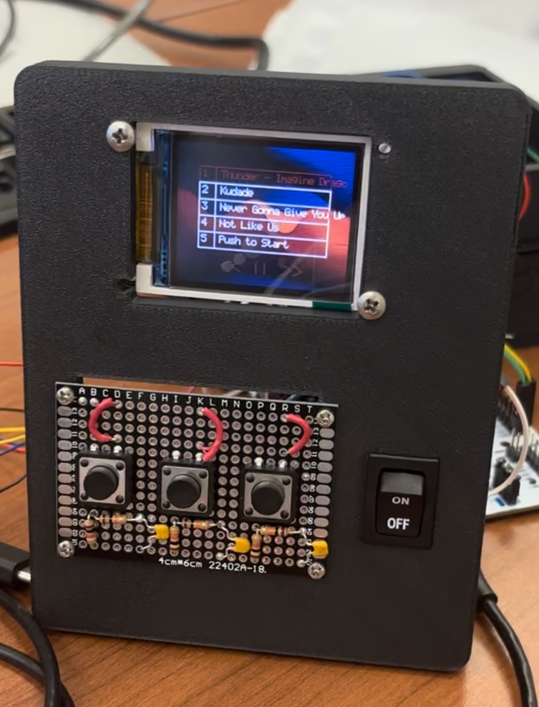
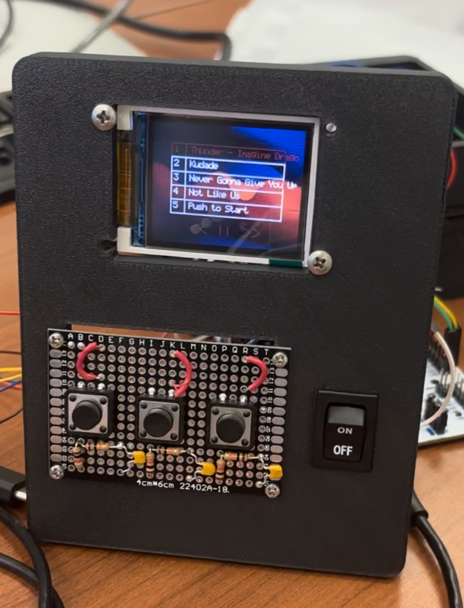
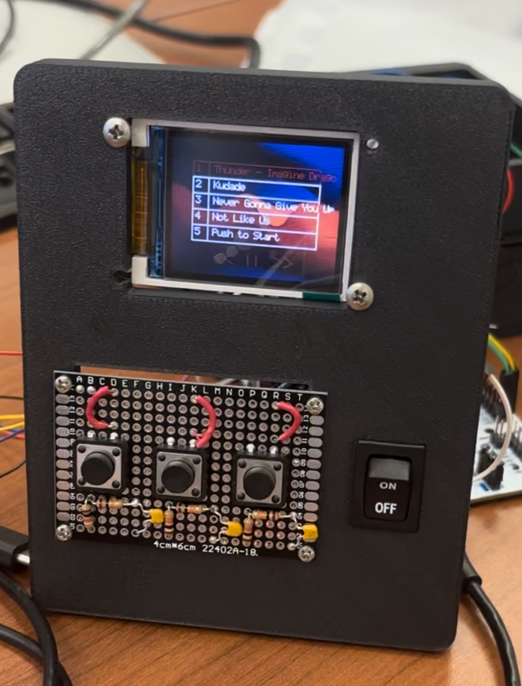
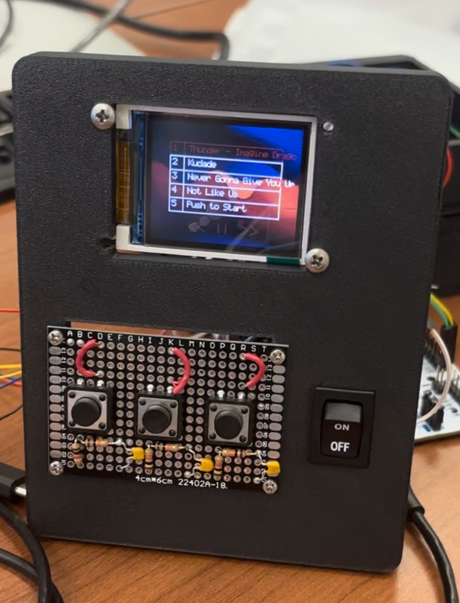

The LCD must accurately render graphics and display the current state of the iPod, including menus, playback status, and user interactions.Validation: Verify display clarity, responsiveness, and update rate during different operations. To quantify this, we would like to see the signals sent from the LCD display being received at the correct speeds correspond to appropiate MCU clock speeds and any scaling we use.
The SD card module must support reading and writing data efficiently, ensuring reliable storage of music, recorded audio, and system logs.Validation Conduct read/write speed tests, check file integrity, and test compatibility with different SD card sizes. We want to ensure that our SD card is reading and writing at at least 100kHz to ensure that there is enough buffer time for music to be loaded onto the device.
The speaker must play sound accurately and at a sufficient volume without distortion when provided with an audio signal.Validation Measure frequency response, output power, and signal clarity under different playback conditions. We want to measure the frequency of the audio coming from the speaker and ensure that it is with our expectation of the notes that we are playing / the sampled beats per second that we are expecting.
The microcontrollers must communicate seamlessly with each other and with peripherals such as the LCD, microphone, SD card, and speaker.Validation Perform communication protocol tests (e.g., I2C, SPI, UART), measure data transfer latency, and ensure stability under various loads. We will want to test this by ensuring that the communication reates with our devices are correct and are as expected.
The system shall provide an intuitive and responsive user interface for navigation and control.Validation Test button responsiveness, menu transitions, and overall usability during different operations. This will be tested by interacting with the device and ensuring that all of the required capabilities mentioned above are integrated into one device without new code configurations.
The LCD display must have a minimum resolution of 128 x 180 pixels and support clear, legible display of menus, playback status, and user interactionsValidation: Verify display clarity, resolution, and update rate during different operations. We will test this by ensuring that the communication rate between the device and the LCD are correct and by seeing if we are able to render downsampled images onto our device at 20k bytes.
The SD card module must support reading and writing at fast speeds to efficiently handle large files such as audio and system logs.Validation: Conduct read/write speed tests, check file integrity, and test compatibility with different SD card sizes We will want to validate this by testing the read / write speed from SD card device to ensure that it is above 100kHz.
The speaker must provide clear and undistorted audio output, with sufficient volume for playback in typical environments.Validation: Measure frequency response, output power, and signal clarity under different playback conditions. We will test this by measuring the noise levels produced by our speaker since we will need an amplifier to work with this device. We would like to hit around 30db for the device to be functioning as intended.
The microcontroller must manage the system’s components, handle user input, audio processing, and communication between peripherals.Validation: Perform communication protocol tests (e.g., I2C, SPI, UART), measure data transfer latency, and ensure stability under various loads. In order for this to be functioning correctly, we will measure the communication time of the peripherals that we are using and ensure that they are sampling at a rate that will be required from the user.
The power supply must support efficient power management to ensure optimal device operation and battery longevity.Validation: Measure power consumption under different workloads and test battery performance over extended usage. To test this, we will need to measure the voltage supply and the current supply using an oscliscope to see if it is 5V. To test if current supply is sufficient, we will both measure the supplied current and use the 5V supply to power our device.
Physical buttons or touch interface must allow the user to navigate the system and control media playback and settings.Validation: Test button responsiveness, UI transitions, and overall usability during different operations. To test this, we will need to ensure that button responses are processed within 500ms to ensure that there is sufficient responsiveness in our device.